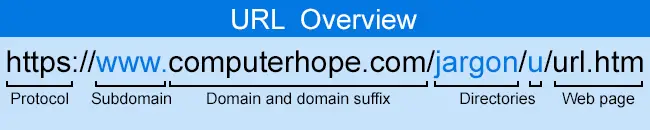

Въведение
Много уеб компании прекарват часове и часове в агонизиране за най-добрите имена на домейни за своите клиенти. Те се опитват да намерят име на домейн, което е подходящо. Звучи професионално, но е отличително, лесно се изписва и запомня и чете по телефона, изглежда добре на визитни картички. [1]
За щастие има техника, наречена пренаписване на URL адреси, която може да превърне грозните URL адреси в хубави — с много по-малко агония и разходи, отколкото избирането на добро име на домейн. Позволява ви да попълните вашите URL адреси с удобни, четливи ключови думи, без да засягате основната структура на вашите страници. [1]
В настоящият реферат ще разгледаме някои от основните неща , които трябва да знаем за презаписването на URL :
- Ще прегледаме от какво се състои един URL адрес
- Ще разберем кои забранени символи не може да ползваме в един URL адрес
- Ще разберем кои платформи и инстументи може да ползваме, ако искаме и ние да презаписваме URL-и
- Как да конфигурираме локално нашата Apache система , за да започнем да пренаписваме URL-и
- Какво са .htaccess файлове в Аpache системата?
- Ще разгледаме основен пример за пренаписване на URL-и и ще надградим малко нивото на обхващане на URL-и чрез използването на шаблони и замествания
- И накрая ще се запознаем с понятия като регулярни изрази , флагове , състояния , които ще ни дадат повече възможности да боравим с презаписването на URL-и
Какво е URL?
Uniform Resource Locator(URL) , разговорно наричан уеб адрес, е препратка към уеб ресурс, който указва местоположението му в компютърна мрежа и механизъм за извличането му. [3]
URL е форма на URI и стандартизирана конвенция за именуване за адресиране на документи, достъпни чрез Интернет и Интранет. Пример за URL адрес е //www.computerhope.com, който е URL за уебсайта на Computer Hope [2]
Преглед на URL адрес
По-долу е допълнителната информация за всеки раздел от HTTP URL адреса на тази страница.
Фиг.1 Преглед на URL адрес [2]
-
http:// или https://
HTTP означава Hypertext Transfer Protocol . Той позволява на браузъра да знае кой протокол се използва за достъп до информацията, посочена в домейна. Протоколът HTTPS е съкращение от Hypertext Transfer Protocol Secure и показва, че информацията, предавана през HTTP, е криптирана и защитена. След HTTP или HTTPS, двоеточие ( : ) и две наклонени черти ( // ) отделят протокола от останалата част от URL адреса.
-
www.
След това WWW означава World Wide Web и отличава съдържанието. Тази част от URL адреса не е задължителна и може да бъде пропусната. Например, въвеждането на http://computerhope.com пак ще ви отведе до уебсайта Computer Hope. Адресната част може също да бъде заменена с важна подстраница, известна като поддомейн.
-
computerhope.com
След това computerhope.com е името на домейна за уебсайта. Последната част от домейна е известна като домейн суфикс или TLD. Използва се за идентифициране на типа или местоположението на уебсайта. Например .com е съкращение от търговски, .org е съкращение от организация, а .co.uk е Обединеното кралство. Има няколко налични суфикса на домейн . Регистрирате името чрез регистратор на домейни, за да получите домейн.
-
/jargon/u/
След това jargon и u са директориите, в които се намира уеб страницата на сървъра. В този пример уеб страницата съдържа две директории. За да намерите файла на сървъра, той ще бъде в директорията /public_html/jargon/u. Директорията public_html е директорията по подразбиране, съдържаща HTML файловете с повечето сървъри.
-
url.htm
И накрая, url.htm е действителната уеб страница в домейна, който преглеждате. Завършващият .htm е файловото разширение на уеб страницата, което показва, че файлът е HTML файл. Други често срещани файлови разширения в Интернет включват .html, .php, .asp, .cgi, .xml, .jpg и .gif . Всяко от тези файлови разширения изпълнява различна функция, каkто всички различни типове файлове на вашия компютър. [2]
Забранени символи в URL
Повечето хора осъзнават, че интервалите не са разрешени в URL адрес. Въпреки това е също така важно да се осъзнае, както е документирано в RFC 1738 [2] , URL низът може да съдържа само буквено-цифрови знаци и символите !$-_+*'() . Всички други знаци, които са необходими в URL адреса, трябва да бъдат encoded.
Какво е URL пренаписване и за какво ни помага ?
Повечето динамични сайтове включват променливи в своите URL адреси, които казват на сайта каква информация да покаже на потребителя. Обикновено това дават URL адресите като следните, казвайки на съответния скрипт на сайт да зареди продукт номер 7
http://www.pets.com/show_a_product.php?product_id=7
Код.1 Показване на продукт номер 7 [4]
Проблемите с този вид URL структура са, че URL адресът изобщо не се запомня. Трудно е да се чете по телефона (ще се изненадате колко много хора предават URL адреси по този начин). Търсачките и потребителите не получават полезна информация за съдържанието на страница от този URL адрес. Не можете да разберете от този URL адрес, че тази страница ви позволява да закупите норвежки син папагал (прекрасно оперение). Това е доста стандартен URL адрес . Сравнете предишния с този URL адрес:
http://www.pets.com/products/7/
Код.2 Показване на продукт номер 7 само че с презаписан URL [4]
Очевидно много по-чист и кратък URL адрес. Много по-лесно се запомня и много по-лесно четим. Но ние можем да направим повече:
http://www.pets.com/parrots/norwegian-blue/
Код.3 Показване на секция с папагали [4]
Можете да разберете от URL адреса, дори когато е изваден от контекста, какво е вероятно да намерите на тази страница. Това е лесен URL адрес за запомняне и предаване на друг човек.
За съжаление, последният URL адрес не може да бъде разбран лесно от сървър без малко работа от наша страна. Когато се направи заявка за този URL адрес, сървърът трябва да разбере как да обработи този URL адрес, така че да знае какво да изпрати обратно на потребителя. Пренаписването на URL е техниката, използвана за превеждане на URL като последния в нещо, което сървърът може да разбере.
Платформи и инструменти
В зависимост от софтуера, който изпълнява сървърът ви, може вече да имате достъп до модули за пренаписване на URL адреси. Ако не, повечето хостове ще активират или инсталират съответните модули вместо вас . Apache е най-лесната система да стартирате пренаписване на URL-и. [4]
HTTP сървърът на Apache е безплатен междуплатформен уеб сървърен софтуер с отворен код, пуснат съгласно условията на Apache License 2.0 . Apache се разработва и поддържа от отворена общност от разработчици под егидата на Apache Software Foundation. Apache поддържа различни функции, много от които са реализирани като компилирани модули, които разширяват основната функционалност. Те могат да варират от схеми за удостоверяване до поддръжка на езици за програмиране от страна на сървъра като Perl, Python, Tcl и PHP. Модулът , който ще използваме за пренаписване на URL адреси се нарича mod_rewrite. [5]
Как да конфигурираме Apache системата , за да започнем да пренаписваме URL адреси ?
Фиг.2 XAMPP контролен панел [6]
Преди да сме започнали какво и да е било трябва да инсталираме XAMPP [6] на нашата машина. XAMPP е безплатен и с отворен код крос-платформен уеб сървър стеков пакет, който е изключително удобен за ползване за нашите цели. Когато сме влезли в контролния панел на XAMPP трябва да цъкнем на Config и да отидем на Apache (httpd.conf) конфигурационния файл, откъде ще трябва да направим мънички промени .

Фиг.3 XAMPP (httpd.conf) конфигурационнен файл [7]
След като сме влезнали в httpd.conf конфигурационния файл трябва да открием редът за зареждане на rewrite_module и да го откоментираме (модулът идва директно с xampp , но ние трябва да решим дали да го ползваме ). По-долу е показано нагледно, как трябва да изглежда след промяната:
..
#LoadModule reqtimeout_module modules/mod_reqtimeout.so
LoadModule rewrite_module modules/mod_rewrite.so
#LoadModule sed_module modules/mod_sed.so
..
Koд.4 Откоментиране на rewrite_module [8]
След това трябва да открием всички срещания на AllowOverride и да ги сетнем на All :
..
<Dirеctory "C:/xampp/cgi-bin">
AllowOverride All
Options None
Require all granted
</Dirеctory>
..
AllowOverride All
..
Код.5 Сетване на стойност 'All' на всички 'AllowOverride' полета [8]
Рестартираме XAMPP и сме готови засега. [8]
Какво са .htaccess файлове в Аpache системата?
.htaccess файлове или "разпределени конфигурационни файлове" предоставят начин за извършване на промени в конфигурацията на база-директория. Файл, съдържащ една или повече директиви за конфигурация, се поставя в определена директория за документи и директивите се прилагат към тази директория и всички нейни поддиректории [9].
Фиг.4 Взаимодействие с '.htaccess' файлове [10]
С други думи те са специални файлове , които ви позволяват да променяте определени аспекти от уеб сървърът , като поставите директиви ( настройки ) в прост текстови файл , който поставяте редом до уебсайт файловете ви ( HTML, CSS, JS , ..). Ако искате да промените някакъв аспект на конфигурацията на уеб сървър , но нямате достъп до конфигурационните файлове на този уеб сървър , тогава е възможно да го направите през .htaccess файлът. [10]
Основно презаписване на URL
Като начало, нека разгледаме един прост пример. Имаме уебсайт и имаме един PHP скрипт, който обслужва една страница. URL адресът му е:
http://www.pets.com/pet_care_info_07_07_2008.php
Код.6 Линк към информация за грижа към домашни любимци [4]
Искаме да изчистим URL адреса и нашият идеален URL адрес би бил:
http://www.pets.com/pet-care/
Код.7 Изчистен линк към информация за грижа към домашни любимци [4]
За да работи това, трябва да кажем на сървъра вътрешно да пренасочва всички заявки за URL адреса http://www.pets.com/pet-care/ към http://www.pets.com/pet_care_info_07_07_2008.php. Искаме това да се случи вътрешно, защото не искаме URL адресът в адресната лента на браузъра да се променя.
За да постигнем това, първо трябва да създадем текстов документ, наречен ".htaccess", който да съдържа нашите правила. Трябва да се наименува точно така (не ".htaccess.txt" или "rules.htaccess"). Трябва да бъде поставен в основната директория на сървъра (в същата папка в която е и файлът "pet_care_info_07_07_2008.php" в нашия пример). Там може вече да има файл .htaccess, в такъв случай трябва да го редактираме, вместо да го презапишем.
Файлът .htaccess е конфигурационен файл за сървъра. Ако във файла има грешки, сървърът ще покаже съобщение за грешка (обикновено с код за грешка 500). Ако прехвърляте файла към сървъра чрез FTP, трябва да се уверите, че е прехвърлен в ASCII режим, а не в BINARY. Използваме този файл, за да изпълним 2 прости задачи в този случай - първо, да кажем на Apache да включи машината за пренаписване ( rewrite engine ) и второ, да кажем на Apache какво правило за пренаписване искаме да използва. Трябва да добавим следното към файла:
RewriteEngine On # Turn on the rewriting engine
RewriteRule ^pet-care/?$ pet_care_info_01_02_2008.php [NC,L] # Handle requests for "pet-care"
Код.8 Правило за презаписване на Код.7 с Код.6 (пише се вътре в .htaccess файлът) [4]
Няколко бързи елемента, които трябва да се отбележат - всичко, следващо # символът в .htaccess файл, се игнорира като коментар и бих ви препоръчал да използвате коментари щедро ;) и редът започващ с RewriteEngine трябва да се използва само веднъж за .htaccess файл (моля, имайте предвид, че не съм включил този ред оттук нататък в примерния код).
Редът RewriteRule е мястото, където се случва магията. Редът може да бъде разделен на 5 части:
-
RewriteRule - Казва на Apache , че това се отнася за единично правило за презаписване
-
^/pet-care/?$ - Шаблонът. Сървърът ще проверява URL адреса на всяка заявка към сайта, за да види дали този шаблон съвпада. Ако го направи, тогава Apache ще размени URL адреса на заявката с това , което е в секцията заместване, която следва.
-
pet_care_info_01_02_2003.php - Заместаването. Apache ще използва тази секция вместо URL-ът от заявката , която е мачнала шаблонът от горната секция.
-
[NC,L] - Флагове, които казват на Apache как да приложи правилото. В този случай използваме два флага. NC казва на Apache, че това правило трябва да е без значение за малки и големи букви, а L казва на Apache да не обработва повече правила, ако се използва това.
-
# Handle requests for "pet-care" - Коментар, обясняващ какво прави правилото (незадължително, но препоръчително).
Горното правило е прост метод за пренаписване на единичен URL адрес и е основата за почти всички правила за пренаписване на URL адреси. [4]
Шаблони и замествания
Горното правило ви позволява да пренасочвате заявки за един URL адрес, но истинската сила на mod_rewrite идва, когато започнете да идентифицирате и пренаписвате групи от URL адреси въз основа на шаблони, които съдържат. Да приемем, че искате да промените всички URL адреси на вашия сайт, както беше описано в първата двойка примери в предната точка. Вашите съществуващи URL адреси изглеждат така:
http://www.pets.com/show_a_product.php?product_id=7
Код.9 Показване на продукт с идентификационен номер 7 [4]
И искате да ги промените така, че да изглеждат така:
http://www.pets.com/products/7/
Код.10 Показване на продукт с идентификационен номер 7 (както искаме да бъде) [4]
Вместо да пишете правило за всеки отделен идентификатор на продукт, вие, разбира се, предпочитате да напишете едно правило за управление на всички идентификатори на продукти. Ефективно искате да промените URL адресите в този формат:
http://www.pets.com/show_a_product.php?product_id={a number}
Код.11 Показване на продукт с идентификационен номер [4]
И искате да ги промените така, че да изглеждат така:
http://www.pets.com/products/{a number}/
Код.12 Показване на продукт с идентификационен номер (както искаме да бъде) [4]
За да направите това, ще трябва да използвате "регулярни изрази". Това са шаблони, дефинирани в специфичен формат, който сървърът може да разбере и обработва по подходящ начин. Типичен модел за идентифициране на число би изглеждал така: [0-9]+
RewriteRule ^products/([0-9]+)/?$ show_a_product.php?product_id=$1 [NC,L] # Handle product requests
Код.13 Решение на задачата [4]
Първото нещо, което трябва да забележим е , че сме поставили нашия шаблон в скоби ([0-9]+). Това ни позволява да направим обратна препратка (препратка към) този раздел от URL адреса в следващия раздел за заместване. "$1" в заместването казва на Apache да постави всичко, което съответства на шаблона в скоби от колонка 2, в URL адреса в този момент. Можете да имате много обратни препратки и те са номерирани в реда, в който сме ги записали едно след друго в колонка 2.
И така, това правило за презаписване сега ще означава, че Apache пренасочва всички заявки за domain.com/products/{number}/ към show_a_product.php?product_id={same number}. [4]
Тестваме това , което научихме досега
Въведете накрая на URL-а от , който достъпвате текущия реферат този край /surprice (съответен пример: https://w20ref.w3c.fmi.uni-sofia.bg/referat/85298_1_38/index.php?action=view&back=review/surprice)
Ако има #neshto_si накрая го изтрийте и тогава добавете /surprice, пример:
https://w20ref.w3c.fmi.uni-sofia.bg/referat/85254_4_69/index.php?action=view&back=review#neshto-si
трябва да стане на :
https://w20ref.w3c.fmi.uni-sofia.bg/referat/85254_4_69/index.php?action=view&back=review
Ако не се е счупило и ви е показало картинка на пингвин , значи сте били изненадани хД.
Как го направихме обаче? :
RewriteEngine On # Turn on the rewriting engine
RewriteRule ^referat.html/surprice/?$ img/surprice.png [NC,L] # Handle requests for "/surprice"
Код.14 Обработване на заявките към /surprice
В .htaccess файлът в главната директория на нашия реферат записахме горното правило , което казва на уеб сървърът ни да замества всички заявки към /surprice с img/surprice.png , което в конкретния случай е просто да препрати потребителя към картинка surprice.png в задължителната директория от скелета на реферата img/.
Регулярни изрази
Пълното ръководство за регулярните изрази е доста извън обхвата на тoзи реферат. Важни точки обаче, които трябва да запомните са, че целият шаблон от колонка 2 в RewriteRule редът се третира като регулярен израз, така че винаги внимавайте със знаци, които са "специални" знаци в регулярните изрази. Най-често това е, когато хората използват '.' (точка) в своя модел. В шаблонът това всъщност означава "който и да е символ" , а не буквална точка и така, ако искате да съпоставите точка (и само точка), ще трябва да "избягате" от знака - да го предшествате с друг специален знак '\' (обратна наклонена черта), която казва на Apache да приеме следващия знак за буквален.
Например, това правило за пренаписване не само ще съответства на URL адреса rss.xml, както е предвидено - то ще съответства и на rss1xml, rss-xml и т.н. :
RewriteRule ^rss.xml$ rss.php [NC,L] # Change feed URL
Код.15 Регулярен израз с '.' (точка) [4]
Използвайки регулярни изрази, е възможно да търсите всякакви шаблони в URL адресите и да ги пренаписвате, когато съвпадат. Таблица с основните специални символи и примери към тях може да открието по-долу:
| Знак | Значение | Пример |
|---|---|---|
| . | Който и да е символ | c.t ще съвпадне с cat,cot,cut, .. |
| + | един или повече от предния символ/шаблон | а+ ще съвпадне с а,аа,ааа, .. |
| * | нула или повече от предния символ/шаблон | а* съвпада с всички примери като с + , но и съвпада с празния стринг '' |
| ? | нула или веднъж от предния символ/шаблон | colou?r ще съвпадне с color, colour |
| \ | еспейпни следващия символ | \. ще съвпадне с . (точка) , а не със \(който и да е символ) |
| ^ | начало на низ или "отрицателно", ако e в началото на диапазон | ^a ще съвпадне с низ, който започва с a |
| $ | край на низ | а$ ще съвпадне с низ , който завършва на а |
| ( ) | улавя група от символи в този ред в скобите | (ab)+ ще съвпадне с ababab , като използвахме и + , за едно или повече срещания |
| [ ] | клас от символи - съвпада с един от символите вътре | c[aou]t ще съвпадне с cat, cot, cut |
| [^ ] | отрицателен клас от символи - съвпада с , който да е символ различен от тези в класа | c[^/]t ще съвпадне с cat , c=t , но не и c/t |
Таблица.1 Основни специални символи в регулярни изрази [11]
Флагове
Флаговете се добавят в края на правило за пренаписване, за да кажат на Apache как да интерпретира и обработва правилото. Те могат да се използват, за да се каже на Apache да третира правилото като нечувствително към главни и малки букви, да спре обработката на правила, ако текущото съвпада, или различни други опции. Те са разделени със запетая и се съдържат в квадратни скоби [ . , . , ]. Ето списък на флаговете с техните значения (тази информация е включена в cheatsheet , така че няма нужда да се опитвате да ги научите всички ).
-
C (свързан със следващото правило )
-
CO=cookie (задаване на специфична бисквитка)
-
E=var:value (задаване на стойност на променлива на средата)
-
F (забранен - изпраща 403 заглавка до потребителя)
-
G (изчезнал - вече не съществува)
-
H=handler (задава обработчик)
-
L (последен - спира обработката на правилата)
-
N (следващ - продължава обработката на правилата)
-
NC (без значение на големината на буквите )
-
NE (без ескейпване на специалните символи в URL )
-
NS (игнорира това правило, ако заявката е подзаявка )
-
P (прокси - т.е. Apache да вземе съдържанието на отдалеченото място, зададено в секцията за заместване и да го върне)
-
PT (пропуска - използва се при обработка на URL-и с допълнителни обработчици, например mod_alias)
-
R (временно пренасочване към нов URL )
-
R=301 (постоянно пренасочване към нов URL )
-
QSA (добавя заявката на заявката към заместения URL)
-
S=x (пропуска следващите x правила)
-
T=mime-type (задава зададения mime тип) [4]
Състояния
Правилата за пренаписване могат да бъдат предшествани от едно или повече условия за пренаписване и те могат да бъдат нанизани заедно. Това може да ви позволи да прилагате само определени правила към подмножество от заявки. Лично аз използвам това най-често, когато прилагам правила към поддомейн или алтернативен домейн, тъй като условията за пренаписване могат да се изпълняват спрямо различни критерии, не само спрямо URL адреса. Ето един пример:
RewriteCond %{HTTP_HOST} ^addedbytes.com [NC]
RewriteRule ^(.*)$ http://www.addedbytes.com/$1 [L,R=301]
Код.16 Пренаписване на URL с състояние [4]
Правилото за пренаписване по-горе пренасочва всички заявки, независимо за какво, към един и същ URL адрес на www.addedbytes.com . Без условието това правило би създало цикъл, като всяка заявка съответства на това правило и се изпраща обратно към себе си. Правилото обаче е предназначено да пренасочва само заявки, в които липсва URL частта www , а условието, предхождащо правилото, гарантира, че това ще се случи.
Условието действа по подобен начин на правилото. Започва с "RewriteCond", за да каже на mod_rewrite, че този ред се отнася за условие. След това е това, което всъщност трябва да се тества, а след това шаблонът за тестване. И накрая, флаговете в квадратни скоби, същите като при RewriteRule.
Низът за тестване (втората част от условието) може да бъде множество различни неща. Можете да тествате заявения домейн, както в примера по-горе, или можете да тествате използвания браузър, препращащия URL (обикновено използван за предотвратяване на hotlinks), IP адреса на потребителя или различни други неща
Шаблонът е почти абсолютно същият като този, използван в RewriteRule, с няколко малки изключения. Шаблонът може да не се тълкува като шаблон, ако започва с конкретни знаци. Това означава, че ако искате да използвате шаблон на регулярен израз, започващ с <, > или тире, трябва да ги ескейпнете с обратната наклонена черта.
Условията за пренаписване могат, подобно на правилата за пренаписване, да бъдат последвани от флагове и има само две. "NC" , както при правилата, казва на Apache да третира условието като нечувствително към главни и малки букви. Другият наличен флаг е "OR". Ако искате да приложите правило само ако едно от двете условия съвпада, вместо да повтаряте правилото, добавете флага „ИЛИ“ към първото условие и ако някое от двете условия съвпада, ще се приложи следното правило. Поведението по подразбиране, ако дадено правило е предшествано от множество условия, е, че то се прилага само ако всички правила съвпадат. [4]
Източници
[1] Paul Tero, "Introduction To URL Rewriting" [ https://www.smashingmagazine.com/2011/11/introduction-to-url-rewriting/ ], последно посетено на 15.04.2023.
[2] Computer Hope , "URL" (definition) [ https://www.computerhope.com/jargon/u/url.htm#url ], последно посетено на 15.04.2023.
[3] URL Wikipedia page (in English) [https://en.wikipedia.org/wiki/URL], последно посетено на 15.04.2020.
[4] Dave Child , 'URL Rewriting for Beginners', публикуван 04.08.2008 [https://aloneonahill.com/blog/url-rewriting-for-beginners/ ], последно посетено на 15.04.2023.
[5] Apache HTTP Server Wikipedia page (in English) [ https://en.wikipedia.org/wiki/Apache_HTTP_Server ], последно посетено на 16.04.2020.
[6] Страница за изтегляне на XAMPP от уебсайта "SourceForge" [ https://sourceforge.net/projects/xampp/ ], последно посетено на 16.04.2023.
[7] Екранна снимка от въпрос със заглавие 'how to configuring a xampp web server for different root directory' в "StackOverflow" , публикуван 19.09.2013 [ https://stackoverflow.com/questions/18902887/how-to-configuring-a-xampp-web-server-for-different-root-directory ], последно посетено на 16.04.2020.
[8] Видео наръчник със заглавие 'how to enabling mod rewrite in xampp', публикуван 01.08.2019, с потребителско име: 'Cairocoders' [ https://www.youtube.com/watch?v=kumXPmWTXpY ], последно посетено на 16.04.2023.
[9] Официална документация на Apache HTTP server '.htaccess files' [ https://httpd.apache.org/docs/current/howto/htaccess.html ], последно посетено на 16.04.2023.
[10] Видео наръчник със заглавие 'Configure Apache using .htaccess files', публикуван 16.07.2017, с потребителско име: 'Dave Hollingworth' [ https://www.youtube.com/watch?v=0Vz2cUHBDPA ], последно посетено на 16.04.2023.
[11] Официална документация на Apache HTTP server 'Apache mod_rewrite Introduction' , 'Regular Expressions' [ https://httpd.apache.org/docs/2.4/rewrite/intro.html ], последно посетено на 17.04.2023.